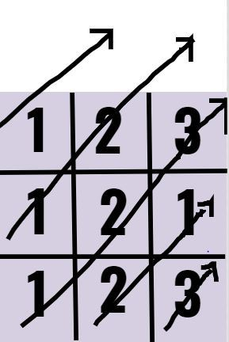

Problem 1: Munchy's Puzzling Cakewalk?
Problem Statement
Munchy survived the traps finally! And as usual , before he takes revenge on Dazzler he left a very tough-tougher-toughest question for the people.You are given an array of N integers. You need to pick any two numbers A and B from the array and let the absolute difference between them be D.
You want to maximise the value of D.Find it.
Input Format
* The first line consists of T denoting the number of testcases.* The second line consists of N the length of the array.
* The following line consists of N space-separated integers.
Constraints
* 1<=T<=10* 2<=N<=100000
* 1<=Ai<=10^9
Output Format
* Print the maximum value of D.Sample Input 0
13
1 2 3
Sample Output 0
2Explanation 0
* Let A be 3 and let B be 1. The absolute difference is 3-1=2.And this is the maximum possible.Approach
- We know that for a difference between two number x and y to be maximum, we need to increase the values of x as much as possible and y to decrease as much as possible.- Hence, x can take the maximum value of the array and y can take the minimum value of the array.
Code in Python
t=int(input()) while(t): t-=1 n=int(input()) a=list(map(int,input().split())) print(max(a)-min(a))
Problem 2: Dazzler and his palindrome
Problem Statement
Dazzler know that Munchy will escape from the grid, so he has prepared more and more problems for him. One such problem is given below. Help Munchy to solve the problem.You have been given with a binary string A of length N. You can permute the string in any way such that it forms a palindrome. formally you have to construct a string B with same number of '0's and same number of '1's as in A with a condition that it should be a palindrome.
You have to print "YES" (without quotes) if you can construct a string meeting the above conditions, else print "NO" (without quotes).
Input Format
* The first line consists of T denoting the number of testcases. * The first line of each test case consists of N denoting the length of the binary string. * The second line of each test case consists of binary string A of length N.Constraints
* 1<=T<=1000* 1<=N<=100000
* Sum of N over all test cases does not exceed 100000
Output Format
* Print a single line for each testcase, "YES" if you can form a palindrome, else print "NO".Sample Input 0
24
1010
5
10100
Sample Output 0
YESYES
Approach
To have a palindrome, atleast one of count of any ony one of the bits should be even. ie.. either count of '1' should be even or count of '0' should be evenCode in Python
t=int(input()) for _ in range(t): n=int(input()) a=input() c=a.count('1') d=a.count('0') if(c%2==0 or d%2==0): print("YES") else: print("NO")
Problem 3: Dazzler and his odd pairs for Munchy
Problem Statement
Dazzler realized his mistake and planned to find an odd ideal pair for Munchy. So he asked your help to count the number of odd pairs before finding the perfect pair.You are given with an array A of length N consisting of non negative integers. You have to count the number of pairs such that a[ i ]+a[ j ] is an odd integer, where 1<=i<=N, i< j<=N.
Input Format
* The first line contains T which indicates the number of testcases.* The first line of each test case contains N.
* The second line of each test case contains the array of length N
Constraints
* 1<=T<=1000* 2<=N<=100000
* The sum of N over all cases does not exceed 100000
Output Format
* For each test case print a single line indicating the number of pairsSample Input 0
23
1 2 3
3
3 3 3
Sample Output 0
20
Explanation 0
* We have two pairs 1+2=3 and 2+3=5.* We have no pairs in the second case.
Approach
Multiply the number of odd integers and number of even integers to get the number of odd pairs, as to get a odd number we need to add an odd number with an even number.Code in Python
t=int(input()) for _ in range(t): n=int(input()) odd,even=0,0 a=list(map(int,input().split())) for i in range(n): if(a[i]%2==0): even+=1 else: odd+=1 print(odd*even)
Problem 4: Shri-cular Array!
Problem Statement
While Munchy was all set for a face-off with Dazzler, Munchy's long lost friend was busy with his games! Munchy decided to gain some power and he decided to meet Shri.It was a normal day on the city of Hackers. Shri wanted to play with Munchy. He decided to play a game called "Game of Balls".
Help Munchy win the game and settle down for a good face-off.
You have N balls of different weights arranged in a row. Since the land of Hackers is magical the balls can have negative weights.
You have to choose some balls out of the N balls by following the below rules :
1. Choose any contiguous set (i,j) of balls (1 <= i <= j <= N).
2. The chosen set of balls should have the maximum weight(Sum of all chosen balls should be maximum).
You will be given an array W of N elements(ranging from 1 to N) with weights Wi of balls.
Your task is to choose any contiguous set of balls with maximum weight.
For example :
If N = 5 and W = [-1, 3, 4, 5, -4] max sum = 12 (3 + 4 + 5).
If N = 6 and W = [-5, 2, -1, 3, 4, -10] max sum = 8 (2 + (-1) + 3 + 4).
the required set of balls are bolded.
Input Format
* The first line contains a single integer T denoting the number of test cases.* The description of T test cases is as follows.
* For each test case, the first line contains a single integer N.
* The second line contains N space-separated integers Wi, denoting the weights of the ith ball.
Constraints
* 1 <= T <= 10* 1 <= N <= 10^5
* -1000 <= Wi <= 1000
Output Format
* For each testcase, output a single line containing the maximum sum of weights of the balls.Sample Input 0
35
-1 5 -4 -3 6
4
1 2 -3 4
3
1 2 3
Sample Output 0
64
6
Approach
- BASICSSub-array : A contiguous block of the original array elements.
Any array A with N element will have a total of (N * (N + 1)) / 2 sub-arrays.
- QUICK EXPLANATION
Given an array A with N elements, we've to find the sub-array with maximum sum. Find out sum of all the sub-arrays, and find the maximum among the sums.
DETAILED EXPLANATION
O(N^3) - will pass test-cases with N <= 500
In the given array, choose a particular subset (i, j) by looping through the array, and loop through the sub-array to find it's sum. Keep updating the sum for all the sub-arrays and find the maximum.
Approach 2 : O(N^2) - will pass test-cases with N <= 10^4
This approach is the continuation of approach 1, just that we'll not loop through every sub-array seperately, rather calculate the sum at the same time when the right end of the sub-array moves (j loop denotes the sub-array ending at j).
Approach 3 : O(N) - will pass test-cases with N <= 10^7
Approach 2 can be further optimised. Instead of calculating sum of sub-arrays with moving end-points, we can calculate the maximum sum of a sub-array which end at that point.
Consider the subproblem of finding the maximum-sum subarray that ends at position i. There are two possibilities:
1.The subarray only contains the element at position i ( [-1, -2, 3, -4, 5], here i = 2 (0 - based indexing) ).
2.The subarray consists of a subarray that ends at position i − 1, followed by the element at position i ([-1, 2, 3, 4, -5], here i = 3 we have a sub-array ending at i = 2, which has maximum sum).
In the latter case, since we want to find a subarray with maximum sum, the subarray that ends at position i − 1 should also have the maximum sum. Thus, we can solve the problem efficiently by calculating the maximum subarray sum for each ending position from left to right.
This algorithm is called KADANE'S ALGORITHM.
Code in Python
N = int(input()) arr = list(map(int, input().split())) sum, max_sum = 0, 0 for i in range(N) : sum = max(arr[i], sum + arr[i]) max_sum = max(sum, max_sum) print(max_sum)
Problem 5: Munchy's Dazzling Diagonals!
Problem Statement
Dazzler realised his mistake and was about to ask sorry to Munchy. But Munchy had other plans as he was in a BEAST MODE and made Dazzler taste his own medicine. He made a trap for Dazzler and now Dazzler is stuck in it.Dazzler is smart and handsome too...so he doesn't want to die this time. Help him to reunite with Munchy!Dazzler is in a grid with N rows and N columns.Initially the grid is empty and each cell doesn't have any values in it.
Dazzler need to fill this grid completely with any positive integer value starting from 1.
Dazzler need to fill it with some integers under following conditions:
1.In each possible diagonal ,it must always satisfy the condition that - no integer in that chosen diagonal must be repeated more than once, in other words all the integers in that diagonal must be distinct .
2.The power value should be as minimal as possible.
The power value of **N*N** grid is defined as the **concatenation of the filled integers** of the upward diagonals starting from row 1,2,3.....N and then the upward diagonals starting from the cells (N,2),(N,3)...(N,N).**Note that the concatenation order is important**.
See the image for better understanding:

Here the power value is :
Upward diagonal values-
**1st Row- 1**
**2nd Row- 1 2**
**3rd Row- 1 2 3**
**(N,2)th diagonal upward value is- 2 1**
**(N,3)th diagonal upward value is- 3**
**Concatenating them in the order as mentioned-[1,1,2,1,2,3,2,1,3]**.
**The above is the smallest or lexicographically smallest concatenation possible**.
**Finally, now you need to find the maximum number of 1's possible in the above smallest or lexicographically smallest concatenated power value**.
**Then print the positions of all the 1's that can be filled in the above concatenated order.**
**If the total number of 1's is more than 100000, then print "SHROOV"(without quotes).
Note that if N is 3.
Then the following matrices are **not valid**.
1 2 3 1 2 3
1 2 2 1 2 3
1 2 3 1 1 3
Input Format
* The first line contains T denoting the number of testcases.* The next line contains N denoting the grid's dimensions.
Constraints
* 1<=T<=100* 1<=N<=10^18
Output Format
* Output the maximum number of 1's possible in the smallest or lexicographically smallest concatenated power value.* If the total number of 1's is less than or equal to 100000 , print their positions too, each of them in a separate line.
* If not so,print SHROOV.
* If there are multiple solutions possible output any of them
Sample Input 0
23
423727011565393481
Sample Output 0
41 1
2 1
3 1
2 3
635590517348090221
SHROOV
Explanation 0
* This is already explained in the problem statement. In the first case, the 1's are filled in the order...(1,1)th cell, (2,1)th cell, (3,1)th cell and finally in the (2,3)th cell.* In the second case,the total number of 1's is 635590517348090221, which is more than 100000, so print SHROOV
Approach
- It's a pattern based question and if n is odd the answer is n+(n/2).- Else if n is divisible by 2 but not 4 , the answer is n+(n/2)-1.
- Else if n is divisible by 4 then answer is n+(n/2).
- For positions of 1, Draw a sample matrix and check it out yourself.
- All the the 1's will be filled in first column itself.
- For remaining if n is odd , its filled in (n/2,(n/2)+2),(n/2,(n/2)+3).....(n/2,n).
- If n is even, its filled in (n/2-1,(n/2)+2),(n/2,(n/2)+2),(n/2-1,(n/2)+4),(n/2,(n/2)+4)......
Code in Python
t=int(input()) while(t): t-=1 x=int(input()) y=(x+(x//2)-((x%2 ^ 1)&((x//2)%2))) print(y) if(y>100000): print("SHROOV") else: n=x if(x%2): for i in range(n): print(i+1,1) for i in range(n//2): print((n+1)//2,((n+1)//2)+i+1) else: for i in range(n): print(i+1,1) for i in range(n//4): c=(n//2)+(2*(i+1)) r=(n//2) print(r,c) print(r+1,c)